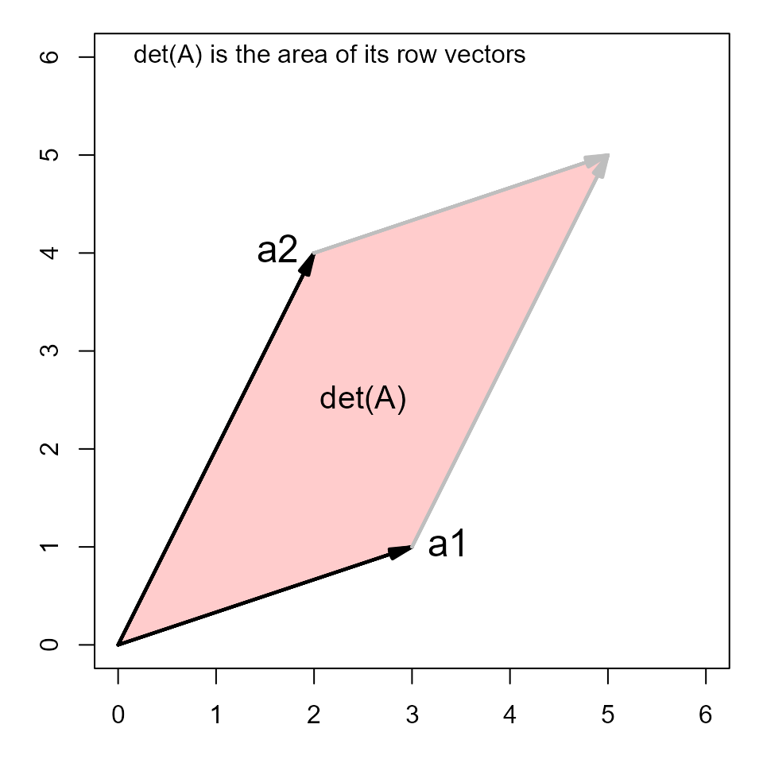
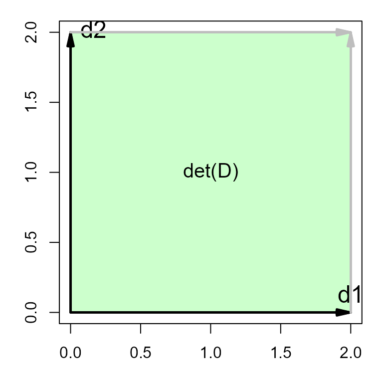

The following examples illustrate the basic properties of the determinant of a matrix. We do this first with simple numerical examples and then using geometric diagrams.
1. Interchange two rows or cols changes the sign: -> -1 * det(A)
det(A[ 2:1, ])## [1] -10
det(A[, 2:1 ])## [1] -103. multiply row * k -> k * det(A)
Note that to multiply rows by different constants requires a diagonal matrix on the left.
## [,1] [,2]
## [1,] 9 3
## [2,] 2 4## [1] 304. multiply matrix * k -> k^2 * det(A)
This is because multiplying a matrix by a constant multiplies each row.
det(3 * A)## [1] 90
3^2 * det(A)## [1] 905. det (A B) -> det(A) * det(B)
The determinant of a product is the product of the determinants. The same holds for any number of terms in a matrix product.
## [,1] [,2]
## [1,] 4 2
## [2,] 3 5## [1] 140## [1] 1406. proportional rows or columns -> det() == 0
Here we just add an additional copy of column 1 of a matrix, so
C[,3] == C[,1]. The determinant is 0 because the columns
are linearly dependent.
## [,1] [,2] [,3]
## [1,] 1 5 1
## [2,] 2 6 2
## [3,] 4 4 4
det(C)## [1] 07. Add multiple of one row to another -> det unchanged
This is the principle behind one of the elementary row operations.
A[2,] <- A[2,] - 2*A[1,]
det(A)## [1] 108. Geometric interpretation
Many aspects of matrices and vectors have geometric interpretations. For matrices, the determinant is the area of the parallelogram defined by the rows (or columns), plotted in a 2D space. (For matrices, the determinant is the volume of a parallelpiped in 3D space.)
## [,1] [,2]
## [1,] 3 1
## [2,] 2 4
det(A)## [1] 10The matlib package has some handy functions
(vectors()) for drawing geometric diagrams.
library(matlib)
xlim <- c(0,6)
ylim <- c(0,6)
par(mar=c(3,3,1,1)+.1)
plot(xlim, ylim, type="n", xlab="X1", ylab="X2", asp=1)
sum <- A[1,] + A[2,]
# draw the parallelogram determined by the rows of A
polygon( rbind(c(0,0), A[1,], sum, A[2,]), col=rgb(1,0,0,.2))
vectors(A, labels=c("a1", "a2"), pos.lab=c(4,2))
vectors(sum, origin=A[1,], col="gray")
vectors(sum, origin=A[2,], col="gray")
# add some annotations
text(0,6, "det(A) is the area of its row vectors", pos=4)
text(mean(A[,1]), mean(A[,2]), "det(A)", cex=1.25)
There is a simple visual proof of this fact about determinants but it is easiest to see in the case of a diagonal matrix, where the row vectors are orthogonal, so area is just height x width.
(D <- 2 * diag(2))## [,1] [,2]
## [1,] 2 0
## [2,] 0 2
det(D)## [1] 4Plot this as before:
par(mar=c(3,3,1,1)+.1)
plot(c(0,2), c(0,2), type="n", xlab="X1", ylab="X2", asp=1)
sum <- D[1,] + D[2,]
polygon( rbind(c(0,0), D[1,], sum, D[2,]), col=rgb(0,1,0,.2))
vectors(D, labels=c("d1", "d2"), pos.lab=c(3,4))
vectors(sum, origin=D[1,], col="gray")
vectors(sum, origin=D[2,], col="gray")
text(mean(D[,1]), mean(D[,2]), "det(D)", cex=1.25)
Finally, we can also see why the determinant is zero when the rows or columns are proportional.
## [,1] [,2]
## [1,] 1 2
## [2,] 2 4
det(B)## [1] 0Such vectors are called collinear. They enclose no area.